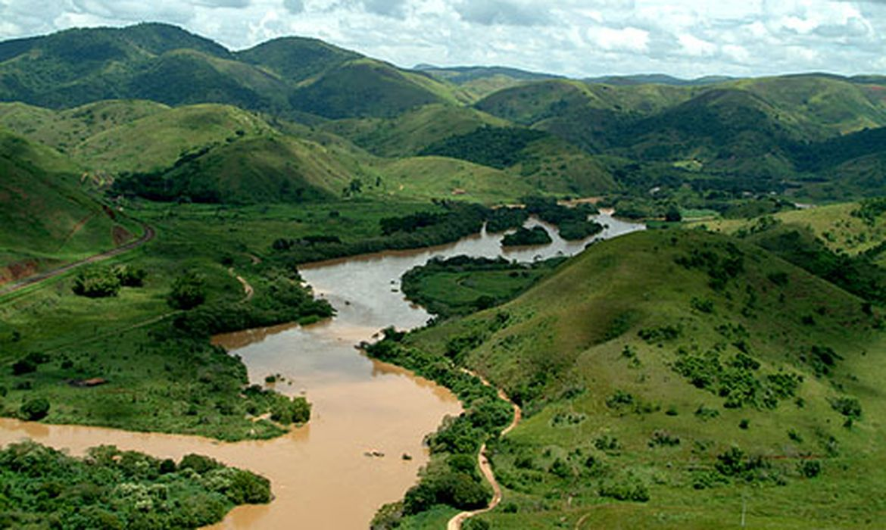

Trabalho de Geografia
A Bacia Hidrográfica do Rio Parnaíba
Instituto Federal do Pará · Campus Óbidos
Curso de Florestas
Começar a leitura ↓
imagens/capa.jpgInstituto Federal do Pará · Campus Óbidos
Curso de Florestas
Começar a leitura ↓
imagens/capa.jpg